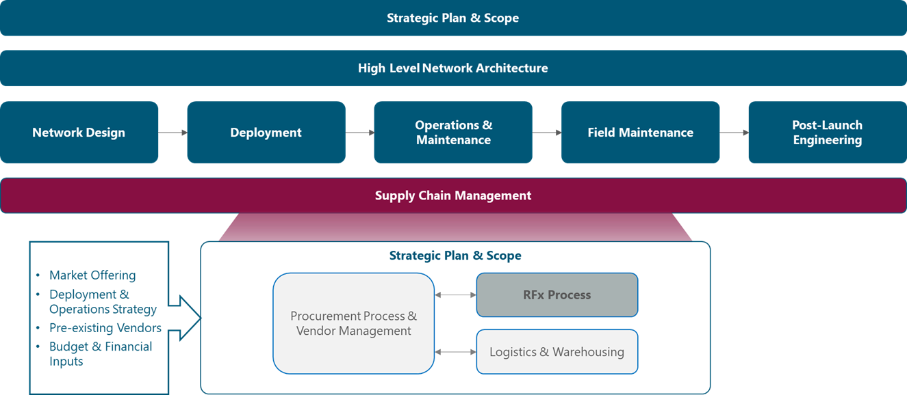
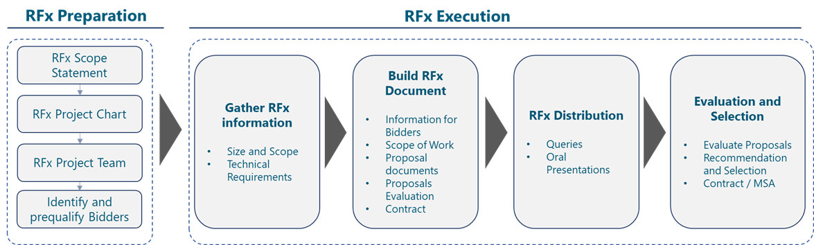
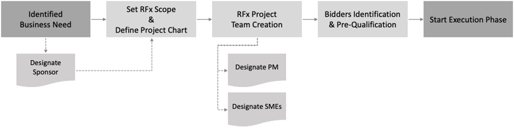

1 Introduction
All organizations have procurement requirements to address products and services that are central to the business mission. This RFx Process Module introduces a structured approach to RFx management to expedite and speed the complex procurement process. It provides the NaaS Operator with background information, methodologies, and templates to execute a wide variety of RFx initiatives. A properly formalized RFx process helps to define what services vendors/suppliers can deliver and the market price for these services under fair competition. The use of the RFx process is important to control costs and ensure a specific vendor is competitive for a specific scope of work.
Different alternatives are possible depending on the main objective and required outcome of the process. Request for Information (RFI) is a formal inquiry in the marketplace for information, typically concerning expressions of interest, capacity, capability, and availability of contractors to undertake and bid on work described in the solicitation. A Request for Proposal (RFP) is a formal invitation containing a scope of work that seeks a formal response (proposal) describing both methodology and compensation to form the basis of a contract. In practice, an RFP tends to include more detailed and comprehensive information. Request for Quotation (RFQ) will be used to request a quotation of well-defined products and services.
The ultimate goal of the RFx process is to get to a contractual agreement with the selected Vendor(s). Goal can also include establishing a Master Services Agreement (MSA) for the provision of products and/or services during an elapsed period of time (typically multi-year). This period can be fixed and determined in the agreement or can be undetermined and renewed every year.
The RFx Process Module creates awareness of the RFx processes, guides NaaS Operators to define and implement the process, and provides generic templates for the RFx documentation. This RFx documentation becomes then an input for specific RFx instances, which will be used in other modules of the NaaS operational areas.
1.1 Module Objectives
The objective of the RFx Process Module is to support NaaS Operators with the implementation of RFx processes to procure external products and/or services. The module has the following specific objectives:
1.2 Module Framework
The Module Framework in Figure 1 shows the modules included in the Supply Chain Management area. Almost all NaaS Operator functional areas may require at some point the implementation of an RFx process to procure products or services for which has been determined that a 3rd Party solution is required.
The RFx Process Module provides a generic framework for understanding and customizing the RFx process and developing RFx documentation. Modules in other streams will benefit from the generic RFx framework to produce RFI/RFP/RFQ document instantiations tailored to their specific needs.

Figure 1. Module Framework
Figure 2 shows the steps in the RFx Process, which drives the development of the RFx Process Module. The end to end process is discussed at a High Level in Section 1 of the outline. Then a deep dive for each phase (Preparation & Execution) and templates for documentation are provided along with guidelines for customization in Sections 3 to 5.

Figure 2. RFx Process
The rest of the module is structured in five sections. In Section 2, a complete end-to-end overview of the RFx process is included, providing the reader with a contextual approach to the rest of the module. The module continues in Section 3 with a more detailed description of the activities in the RFx Preparation phase. Then, Section 4 examines the activities of the RFx Execution phase, from initial data collection to Vendor evaluation and selection. Finally, Section 5 provides a comprehensive instantiation of the RFx document, from the preliminary notification to vendors to a contract award template. This RFx document will constitute the main vehicle to request and receive information from the Bidders.
2 RFx Process Overview
The RFx processes provide a view of the market capabilities to respond to the NaaS Operators needs. Depending on the type of request from the NaaS Operator, and RFI, RFQ or RFP process will be advisable. At a high level, a comparison between the RFx processes can be established based on the level of detail of the scope of work description, the timing of the process and the detail of the response, as summarized in Table 1.
|
RFx Process |
Detail of Scope |
Timing |
Detail of Response |
|
RFI |
▪
High Level definition of scope ▪
The NaaS Operator does not have enough information to define a detailed request ▪
Often used as a screening or shortlisting tool ▪
Does not imply a commitment to buy ▪
Likely to develop into a future RFP/RFQ |
1 week |
High level |
|
RFQ |
▪
There is a clear definition of the product or service ▪
Purchase decision primarily based on cost |
1 - 2 weeks |
Very Detailed |
|
RFP |
▪
Detailed business need definition, not so detailed
description of the solution. ▪
Seeking for alternatives or proposals. ▪
Multi-dimensional purchase decision |
4 - 6 weeks |
Very Detailed |
Table 1. RFx Process Comparison
RFIs are suitable to establish feasibility and vendor characterization. An RFI is less specific and includes less information than other processes. The advantage of the RFI is its simplicity, being easier to prepare and faster to respond.
RFQs are appropriate when the scope of work is clearly defined, and the NaaS Operator is seeking for a cost comparison.
RFPs are required when an in-depth, multi-dimensional comparison between vendors is required. RFPs are the adequate process when there are different alternatives to implement the scope of work and the NaaS Operator is looking for an end-to-end comparison between the available solutions in the market. Once the solution is established, RFPs are followed by a request for quotes, on the basis of the approved solution.
In all cases, the RFx Process will start with a Preparation phase, in which the Scope of Work of the process is established by the Project Sponsor in a Project Chart. Once approved within the NaaS Operator, the RFx Project Team will be created. The composition of the RFx team will include a Project Sponsor, a Project Manager (PM) and a business and technical Subject Matter Experts (SME). The preparation phase finishes with the identification of the vendors to which the RFx process will be addressed.
In the RFx Execution Phase, the requirements of the solution are defined, including the technical, commercial or legal specification. These requirements are translated into a formalized RFx Document, which is structured differently for each process type (RFI/RFP/RFQ) around a common framework. The definition of the RFx structure is described in section 4.2 of this module.
Finally, the RFx Evaluation Phase consists of the assessment of the received responses. Based on such responses, the RFP team will make a recommendation to the project sponsor on the vendor selected for contract negotiations, solution purchase or capability validation.
3 RFx Preparation Phase
The RFx preparation phase is depicted in Figure 3. Once a Business Need has been identified, a Project Sponsor is designated to initiate the RFx process by setting the RFx Scope and defining a Project Chart. The Project Sponsor is the owner of the project, typically a management role in the organization or group where the business need has been detected.
With the project objectives already established, an RFx Project Team is created with the Project Sponsor, a Project Manager and Subject Matter Experts, as needed. The Sponsor is responsible for providing resources and support to the project, with the Project Manager being the person in charge of daily activities.

Figure 3. RFx Preparation Phase
The sections below describe the activities developed during the RFx Preparation. The roles and responsibilities of team members are summarized and templates for the process outputs are included for customization by NaaS Operators.
3.1 RFx Scope & Project Chart
The RFx Scope establishes the Business Need that the RFx process is trying to resolve. The RFx Scope presents a description of the environment, pre-existing considerations, a high-level estimation of timelines and the format of the agreement, such as time and materials, equipment supply, professional services or a turnkey end to end project. Based on the type of RFx type, the considerations in Table 2 must be contemplated when writing the scope to ensure alignment between the request and the expected response. The scope description must provide all details needed to properly understand the technical and commercial needs, the project limitations and constraints and, in general, any additional information which may be relevant to the vendors.
|
RFx Process |
RFx Scope Considerations |
|
RFI |
Scope is high level. The NaaS Operator
may not have sufficient information to write a
detailed request. Since the NaaS operator is not
committed to buying, the request may be limited to a description of
capabilities or solutions from the vendors. |
|
RFQ |
The NaaS Operator has a clearly
defined specification for the item to purchase. The vendor selection will be
primarily (or solely) based on price. |
|
RFP |
The NaaS operator is seeking for a
complete solution from vendors, which includes a proposed solution and
associated commercial conditions. The specification may be unclear or be only
defined at a high level. |
Table 2. RFx Scope Considerations
Once the business need is formalized as an RFx scope, the project Sponsor presents a Project Charter to formally commence the project and designate the Project Manager who will be responsible for the complete execution of the process. The Project Charter is a short document that contains the essence of the project. It states the project scope, the business need being addressed, the project schedule and the structure of the team being responsible for its completion.
The Project Charter Template provides a predefined format for the Chart, which can be easily tailored to the specific RFx process.
3.2 RFx Project Team Creation
After the definition of the Project Charter, an RFx Project Team will be put together to provide support to the RFx process. The RFx Project Team is composed of the following profiles:
Once the RFx team is defined, the process of identifying and pre-qualifying vendors commences. This is a prerequisite to the submission of documentation to targeted vendors to avoid the involvement of suppliers, which would be unable to deliver the project scope.
3.3 Bidders Identification and Pre-Qualification
The Bidder Identification phase is used to identify potential vendors that can satisfactorily respond to the RFx process. Module Procurement Process and Vendor Management further develops the process of identifying vendors as part of the Procurement process.
The NaaS Operators should invite to respond vendors with previous and successful experience on a similar scope of work with the NaaS Operator or their competitors. In the absence of previous references, the NaaS Operator must request a list of potential partners to the local authorities, local Chambers of Commerce and professional associations. Market research through online directories or web searches is also a valid mechanism to detect potential partners.
The different sources for Bidder Identification are examined in the following subsections.
Previous Vendors
- Identify among previous vendors those with capabilities and experience (with the NaaS operators or other similar companies) that are deemed adequate to address the Scope of Work.
- Request current vendors on business areas that may be related to the scope of work for potential partners.
- Use contacts in other providers and even in competitors to obtain references from possible vendors.
Local Authorities:
- Contact local authorities for qualified vendors on the area of interest. Local authorities may have directories of companies grouped by area of expertise, company size and years of experience.
Chambers of Commerce:
- Contact the Chamber of Commerce for information similar to the one stated for local authorities.
- In some markets, there may be national, regional and local organizations of the Chambers of Commerce. Depending on the project scope, some or all of the should be contacted.
Professional Associations:
- Identify and contact professional associations based on the required area of knowledge / expertise.
- Same as for the Chambers of Commerce, some markets may have national, regional and local branches of the associations.
Web Searches:
- As a complement to the above sources, direct web searches for vendors should be performed. The searches could be addressed to directory portals or to discover web sites presenting the vendor capabilities.
The potential bidders shall be sent an invitation letter, such as the example contained in the Invitation Letter Template. This letter provides the vendor with an abstract of the project scope and relevant RFx dates. The provided format will be populated with an abstract of the scope of work, information on the relevant dates of the process and the contact points at both the NaaS Operator and the vendor.
Those vendors who have confirmed interest in responding to the RFx process shall be submitted a Pre-Qualification Form as the one included in the Pre-qualification Template. This form provides key questions that the NaaS Operator will use to determine the suitability of the vendor to address the project scope. This qualification form will include technical, commercial and legal questions with the objective to short-list the number of companies receiving the final RFx document.
The Pre-Qualification Form can be modified by the NaaS Operator by adding or removing questions as they appear relevant to the process. The vendor shall be provided with an Excel form only containing the questions in the Pre-qualification Template. When the responses are received, the NaaS operator will insert them into the template to allow for a side by side comparison between vendors.
Selected vendors will enter into
the RFx Execution Phase and will receive the RFx documentation. Disqualified
vendors shall be sent a thank-you letter to ensure proper relationships are
maintained for future processes.